Open Condition Monitoring : Asset Management, Training, Systems and Research. TPM, CBM, RCM, REM implementation
[ Maintenance Objectives Index ]
[ Go to Open Condition Monitoring Main
Index Page ]
[ Failure Theory Index ]
[ Maintenance Implementation Index ]
[ Maintenance Optimisation Index
]
[ Maintenance Performance Index ]
Section 1 Maintenance Objectives
[ Table of Figures and
Diagrams ]
1. Introduction
1.1. Maintenance
Goal
2. Terotechnology
Section 2 Failure Theory
3. Reliability of Systems, Equipment
and Components
3.1. Introduction
3.2. Definitions
3.2.1.
Reliability
3.2.2.
Maintainability
3.2.3.
Availability
3.2.4.
Repairable & Non Repairable Systems
3.3. Reliability
Function
4. Reliability Block Diagrams
(RBD)
4.1. Introduction
4.2. System
Configurations
5. The "Bath Curve"
6. Six Patterns of Failure
7. The Nature of Failure
8. Bell Curve
Section 3 Implementing Maintenance
Tasks
9. Maintenance Plan
9.1.
Introduction
9.2. On-Failure
Maintenance
9.3. Fixed Time
(Planned) Maintenance
9.4. Condition
Based Maintenance (CBM)
9.5. Design out
9.6. Opportunity
Maintenance
10. Potential Failures and the
P-F Curve
11. P-F Curves and inspection
interval timing
12. Condition based maintenance
(CBM)
12.1.
Introduction
12.2. Operating
Parameters
12.2.1.
Vibration
12.2.2. Temperature
12.2.3.
Lubricating Oil Analysis
12.2.4.
Acoustics
12.2.5.
The Human Senses
12.2.6.
Other Parameters
13. Vibration Analysis
13.1. Introduction
13.2. CBM Tours
13.3. Overall Vibration
13.4. Fast Fourier
Transform
13.5. Failure Modes
Section 4 Optimum Maintenance
Tasks
14. Plant Register (Asset
Hierarchy)
14.1. Introduction
14.2. Hierarchy
15. Failure Modes Effects &
(Criticality) Analysis (FME(C)A)
15.1. Introduction
15.2. Benefits
15.3. Maintenance
Review
16. Fault Tree Analysis (FTA)
17. Cause and Effect Diagrams
(Fish Bone or Ishikawa Diagrams)
18. Reliability Centred
Maintenance
18.1. Introduction
18.2. Seven Basic
Questions
18.3. Implementing RCM
19. Review of Equipment
Maintenance
19.1. Introduction
19.2. Reliability and
Criticality Analysis
19.3. Maintenance Review
19.4. Maintenance Tasks
20. Why-Why Analysis
20.1. Introduction
20.2. Maintenance &
Production Records
20.3. Example of Why
Why
Section 5 Measure Maintenance
Performance
21. Maintenance Management
System (MMS)
21.1. Introduction
21.2. Asset Manager
21.3. CBM Manager
21.4. Spares Manager
21.5. Work Control
Manager
21.6. Report Manager
22. Overall Equipment Effectiveness
(OEE)
22.1. Introduction
22.2. Six big losses
22.3. Availability
22.4. Performance
Efficiency
22.5. Yield
23. Pareto Analysis
TABLE OF figURES [ go to Main Index ]
Figure 1 Maintenance Goal
Figure 2 Life Cycle Costing
Figure 3
Contribributers to Life Cycle
Costs
Figure 4 The Terotechnology system
Figure 5 Difference between MTTR and total
downtime
Figure 6 Series Reliability Diagram
Figure 7 Active Redundancy
Figure 8 M-out-of-N System
Figure 9 Bath Curve
Figure 10 Average life and planned maintenance
intervals
Figure 11 Six patterns of failure
Figure 12 The Bell Curve
Figure 13 Maintenance Strategies
Figure 14 the P-F Curve showing inspection
intervals
Figure 15 P-F curve and inspection interval
timing
Figure 16 Summary of Condition Monitoring
Techniques
Figure 17 Application of Condition Based Monitoring
Techniques
Figure 18 FMECA Worksheet
Figure 19 Fault Tree for Calculator Display
Figure 20 Fish Bone Diagram
Figure 21 Review of Equipment Maintenance
Figure 22 Job Details Page from a Work Control
Module
Figure 23 Example Calculation of OEE
Figure 24 Man-Man Hours recorded against each unit
number
Figure 25 Pareto Analysis of Maintenance Man-Hours
recorded by unit
Section 1 Maintenance Objectives
[ go to Main Index ]
[ Table of Figures and Diagrams ]
1. Introduction
1.1. Maintenance
Goal
2. Terotechnology
The goal of any well run maintenance organisation is to have the lowest cost of the sum of two quantities, i.e.:
Maintenance itself can result in excessive downtime and costs. This results from the requirement to take the machinery off-line to carry out (possibly unnecessary & invasive) maintenance. The danger of infant mortality after it has been put back on line again and also the cost of the maintenance action itself contributes to costs. Achieving the lowest cost is an optimisation technique shown graphically in Figure 1.
Figure 1 Maintenance Goal [ Table of Figures ] [ Maintenance Objectives Index ]
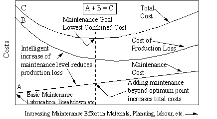
Companies should be able to put a cost to their loss of production resulting from equipment down time. This figure added to the maintenance budget results in the total costs as shown. When maintenance costs are at a minimum the cost of lost production is at its highest. As maintenance effort and costs are intelligently increased the production loss gradually decreases until the lowest combined cost is achieved. This is the maintenance goal. Maintenance effort applied beyond this point, increases costs. Maintenance can increase costs because of the need to take equipment off line to carry out maintenance, infant mortality after being put back in service, etc. There are also the costs of the maintenance itself with labour and material costs.
Definition
Terotechnology: a combination of management, financial, engineering and other practices applied to physical assets in pursuit of economic life cycle costs. Life Cycle Costing (LCC) involves collecting all the cost information incurred during plant life. This information will show the inter-related cost areas (Figure 3) and give an indication of their importance for cost reduction.
Top - Figure 2
Life Cycle Costing at Design Review Stages [
Table of Figures ]
Bottom - Figure 3 Contribributers to
Life Cycle Costs [ Table of
Figures ]
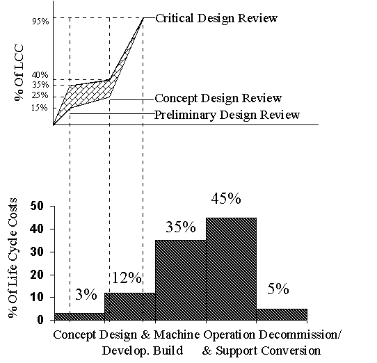
Decisions made at an early stage in the concept and design of an item of plant can have significant effects on the cost of running that piece of equipment throughout its life (Figure 2).
Preliminary design review - 15% to 35% of the life cycle costs have been determined
Concept design review - 25% to 40% of the life cycle costs have been determined
Critical design review - 95% of the life cycle costs have been determined.
The designer must be aware of the consequences of his decisions. If for instance, he installs a bearing in an inaccessible position, that bearing will certainly have to be changed a number of times during the life time of the equipment. Due to the difficulty of access this will incur excessive costs. If this inaccessible position is unavoidable, the installing of a top quality and/or an oversize bearing, will increase the purchase costs but may reduce the overall life cycle cost. The same applies during the operating life in the purchasing of spare parts, maintenance tools, and training of operators and maintainers. A saying sums this up "buy cheap-buy twice". Terotechnology recognises that attention to maintenance alone will not provide the complete answer to the problems arising in the maintenance sector (or otherwise attributed to maintenance). It is necessary to look at other management functions having an influence on the performance and costs of physical assets. Figure 4 shows the contributors to the total life cycle costs.
Figure 4 The Terotechnology system [ Table of Figures ] [ Maintenance Objectives Index ]
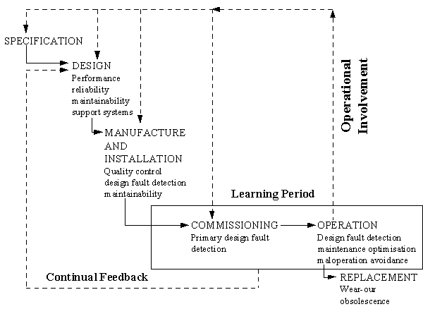
The Terotechnology system is generally shown as a combination of management systems and communication channels which provide support for maintenance. Typical contributions include:
Section 2 Failure Theory
[ go to Main Index ] [
Table of Figures and Diagrams ]
3. Reliability of Systems, Equipment
and Components
3.1. Introduction
3.2. Definitions
3.2.1.
Reliability
3.2.2.
Maintainability
3.2.3.
Availability
3.2.4.
Repairable & Non Repairable Systems
3.3. Reliability
Function
4. Reliability Block Diagrams
(RBD)
4.1. Introduction
4.2. System
Configurations
5. The "Bath Curve"
6. Six Patterns of Failure
7. The Nature of Failure
8. Bell Curve
A reliable piece of mechanical equipment is understood to be basically sound, to be able to meet its design specifications, and to give trouble-free performance in a given environment. However, it is necessary to have an understanding of the technical, engineering use of the term 'reliability' as specified for mechanical equipment. All plant, equipment and components have a finite life, and so eventually all pieces of equipment will fail. Without a technical definition of reliability it would not be possible for engineers or managers to make meaningful comparisons between the reliability of alternative plant and equipment.
Reliability is the probability that a plant or component will not fail to perform within specified limits in a given time while working in a stated environment. For the case of mechanical systems the following definition can be used to define reliability
Mechanical Reliability is the probability that a spare, item, or unit will perform its prescribed duty without failure for a given time when operated correctly in a specified environment.
The definition of reliability includes a number of variables that are external to the artefact being analysed. Identical equipments may have very different duty requirements such as frequent stop-starts or continuous running. Environmental conditions such as fine dust can also effect a machine. It is thus necessary to understand completely the operating conditions under which an artefact is expected to operate.
Once a piece of equipment has failed it must be possible to get it back into an operating condition as soon as possible, this is known as maintainability. To calculate the maintainability or Mean Time To Repair (MTTR) of an item, the time required to perform each anticipated repair task must be weighted (multiplied) by the relative frequency with which that task must be performed (e.g. no. of times per year). MTTR data supplied by manufacturers will be purely repair time which will assume the fault is correctly identified and the required spares and personnel are available. The MTTR to the user will include the logistic delay as shown in Figure 5.
Figure 5 Difference between MTTR and total downtime [ Table of Figures ] [ Failure Theory Index ]
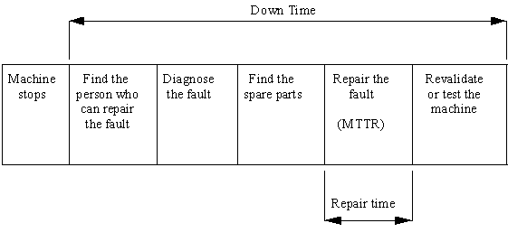
The probability that an item, under the combined influence of its reliability, maintainability and maintenance support, will be able to fulfil its required function over a stated period of time, or at a given point in time. The operating context of a piece of equipment will determine its performance requirements. An airliner will be expected to reach its destination once it has taken off. To guarantee this it will spend a relatively large amount of its time being serviced. In this case the reliability must be 100% but it's availability may be relatively low. In process industries which run continuously the availability is of prime importance. The definition of availability is:
The availability of a system is the probability that the system is functioning at time t. The Availability for a single machine is:
A = MTBF/(MTBF+MTTR)
The implication of this formula is that high availability can be obtained either by increasing the MTBF, and hence the reliability, or improving the maintainability by decreasing the Mean Time To Repair (MTTR). The MTTR would include the repair time and the logistic delay (obtaining labour and spares).
In reliability engineering repairable and non repairable systems are treated differently. A non repairable item is replaced with a new item which will be as good as the item replaced. Over time as items are replaced with identical new items the failure rate will remain constant. In a repairable system the repaired item following a breakdown will not be as good as when it was first installed (as good as new (agan)) General wear and errors in the repair carried out will result in the failure rate increasing over time.
Some batches of components can display a constant failure rate Alternatively some items can contain many spares of varying failure rates. With the mixing of failure rates of new and old spares within the unit the failure rate of the unit can be constant (known as a 'pseudo-constant' failure rate. In these situations:
R(t) = e-t
R(t) = Reliability at time t
= 1/MTBF
and so
R(t) = e -t/MTBF
Where: t = time since the last failure
MTBF = Mean time between failures
Example
A motor is required to run for two years without a failure
Manufactures MTBF 2 years
= e-2/2 = 0.36
MTBF 2 years R(t) = 0.36 Approx. two in three chance that it will
fail in
the first two years. The manufacturers guarantee of a MTBF of 2 years is
not
adequate to give a high probability of survival for two years.
Manufactures MTBF 10 years
= e-2/10 = 0.82
MTBF 10 years R(t) = 0.82 82% chance that it will run for two years without failing
Up to now the reliability of individual spares has been discussed. A number of spares will make up an item which in turn make up a unit, plant area, and then an entire plant. In industry it is necessary to estimate the reliabilities of equipments that interact with each other. Before any form of reliability analysis is attempted, it is necessary to represent the system under consideration, as a block diagram. A block diagram with an individual block for each unit can represent the entire plant. If necessary lower level block diagrams can represent items within units. Two basic types of diagrams can be used to represent a system.
A functional block diagram (system layout) can represent the actual plant layout showing how plant units are interconnected. This helps to describe how the system is expected to operate.
For reliability assessment a Reliability Block Diagram (RBD) is more useful.
It is necessary to have an understanding of the basic types of unit layout that exist in industry
Series Systems: In a series system, failure of any unit constitutes system failure. The reliability of the system is the product of the reliabilities of the units making up the system.
Figure 6 Series Reliability Diagram [ Table of Figures ] [ Failure Theory Index ]
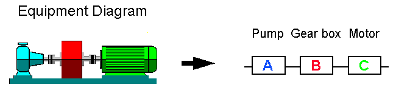
Placing units in series increases the failure rate and reduces the overall availability of the system (Figure 6)
system = A + B + C
Avsystem = AvA x AvB x AvC
Full Active Redundancy: In an active redundancy system (Figure 7Figure 7), a number of units sustain the function until one fails; the remaining unit can continue to provide the function.
Note: If both of the pumps in Figure 7 must be operational to sustain the function, in reliability terms they would be in series despite being in parallel on the system diagram.
Figure 7 Active Redundancy [ Table of Figures ] [ Failure Theory Index ]
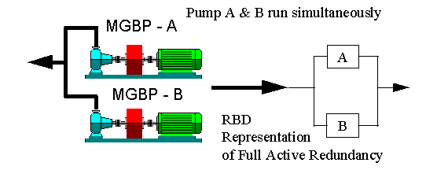
The System Reliability Rs for one out of two units in parallel is:
Rs = 1-{(1-RA)(1-RB)}
M-out-of-N In these cases individual units share provision of the function, which can be sustained at a satisfactory level should one or more of the units fail. In active and standby redundancy systems this can be known as m-out-of-n models. In Figure 8, at least m units out of a total of n must be in operation for the system to operate.
Figure 8 M-out-of-N System [ Table of Figures ] [ Failure Theory Index ]
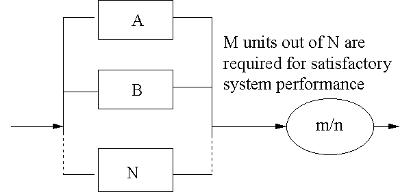
Example:
Three units are in active parallel, of which at least 2 must be in operation for satisfactory system operation.
System Reliability Rs = R1R2R3 + R1F2F3 + R2F1F3 + R3F1F2
If R1 = R2 = R3
Then RS = R3 + 3RF2
Many differing batches of mechanical and electrical industrial components have been tested to determine if it is possible to predict when they will fail. These tests have revealed that during their normal working life, they do not reach a point of wear-out at some likely time that could be called "old age". On the contrary a given item is as likely to fail in a given week shortly after installation as in a given week many months later. This probability of failure which is known as the failure rate (symbolised by the Greek letter lamba ) can go through three distinct failure patterns. Batches of components can display one, two or all three (Figure 9 Bath Curve) of these patterns (stages) through their life time.
Figure 9 Bath Curve [ Table of Figures ] [ Failure Theory Index ]
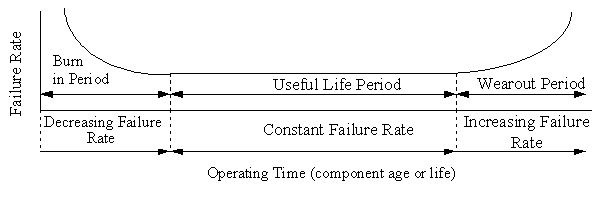
In the first of the three stages, the failure rate plunges downward rapidly from a very high starting point - this is "infant mortality". Failure during this stage can be attributed almost entirely to manufacturing & installation defects. Failure caused by manufacturing defects or poor installation tend to show up almost immediately, accounting for the high starting point. The term "Burn In" which can also be used to describe this period, comes from the computer industry where new machines are run in a hot environment before dispatch. Any hardware faults will show up quickly in this elevated temperature. Once a machine passes it shall have a long trouble-free life. Equipment can also return to the infant mortality stage after maintenance intervention (Figure 10). For various reasons, equipment can suffer problems as a result of maintenance. Planned maintenance can actually reduce its availability.
Example: a group of similar bearings are changed every year as part of a planned maintenance activity. If they were condition monitored and changed on showing signs of imminent failure, it would be found that these bearings have an average life of 2.5 years. This over maintaining then results in increased probability of failure due to the infant mortality after each maintenance activity.
Figure 10 Average life and planned maintenance intervals [ Table of Figures ] [ Failure Theory Index ]
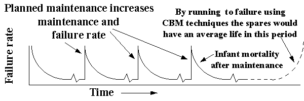
As the curve levels off, it enters the second stage that is a straight segment indicating an essentially constant failure rate. In the final stage, the failure rate climbs sharply as spares wearout.
In reality the bath curve has little application in industrial process. Very simple components can follow this failure pattern such as a light bulb where faulty manufacture may result in very short life. A rare example of a more complex system that follows the bath curve is a petrol engine. Engines have to be taken care of in their early life to allow them to "bed in". Following this they go through a period of constant failure. Most petrol engines then fail following a life of 100,000 to 150,000 miles. Even this so called wearout period can cover a significant part of the engine's life.
Figure 11 Six patterns of failure [ Table of Figures ]
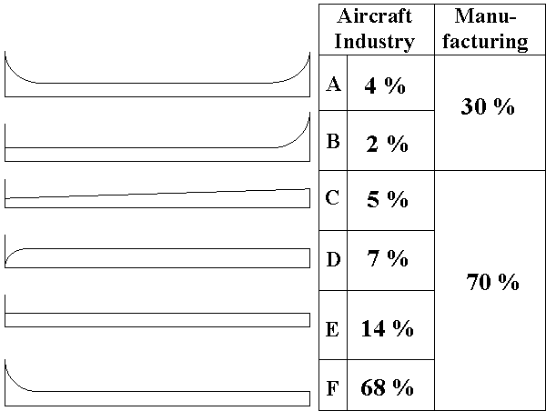
During the development of the Boeing 747, batches of aircraft components were tested to determine their failure patterns (ref.). The results are displayed in Figure 11.
Pattern A is the well-known bath curve.
Pattern B shows constant or slowly increasing failure probability ending in a wear-out zone.
Pattern C shows slowly increasing probability of failure, but there is no identifiable wear-out age.
Pattern D shows low failure probability when the item is new or just out of shop, then a rapid increase to a constant level.
Pattern E shows a constant probability of failure at all ages (random failure).
Pattern F starts with high infant mortality, which drops eventually to a constant or very slowly increasing failure probability.
In highly complex equipment, such as an aircraft, infant mortality followed by random failure is the dominating failure pattern as shown by the above studies carried out on civil aircraft. Within manufacturing industry, approximately 30% of industrial failures are related to age as in A & B. With increasing complexity of modern equipment the failure pattern from industry will more closely match the studies from the aircraft industry.
Failure pattern B depicts age-related failures as in the figures from the aircraft industry very few failures show a relation-ship with age. An example would be abrasion, e.g. the abrasive action of piston rings on the cylinder walls of a reciprocating engine.
Failure pattern C shows a steadily increasing probability of failure, but there is no one point at which we can say, "that's where it wears out". Cyclic stresses resulting in fatigue are the main cause of this failure pattern.
Failure Pattern E is pure random failure. All the empirical evidence shows that rolling element bearings usually conform to a random failure pattern. However it is still possible to compute a mean time between failure (MTBF) for such items. It is given as the point at which 63% of the items have failed. Often poor MTBF for bearings can be attributed to poor choice and/or fitting.
Failure pattern F is the most common failure pattern and like the bath curve shows a failure rate decreasing with age before going into a period of random failure. The high infant mortality has a variety of causes:
poor design bad workmanship
incorrect installation poor reassemble
incorrect commissioning incorrect operation
invasive maintenance poor quality manufacture
unnecessary routine maintenance cleanliness
Some engineers and managers tend to be over optimistic about the effectiveness of Planned Maintenance (PM). There are limitations to PM:
The example below (failure distribution A) shows the occurrence of MTBF for a compressor bearing:
10 bearings failed between 2.5 years and 3.5 years.
20 bearings failed between 3.5 years and 4.5 years, etc.
From 3.25 years the incident of bearing failure started to increase
By 5.5 years 50% of the bearings had failed
Some bearings did not fail until 8.5 years
Imagine a strategy of changing all the bearings at 4.7 years.
The frequency of failure had started to increase over a year earlier and some bearings would continue to run satisfactorily for another 3.7 years. Even though this planned maintenance is 0.8 years before the average life of 5.5 years, a considerable number of failures still occur (area a + b).
This planned maintenance is expensive in that it changes the majority of bearings needlessly early (up to 3.7 years early) and it does not prevent failures as a small amount still occurs.
Planned maintenance for failure distribution "B" in which the majority of failures occur in the period 4.3 years to 7 years would be more effective. A PM strategy at 4.7 years would allow a small number of failures (area b). It again takes place 0.8 years before the average and 2 years before the maximum expected life. While in this case it is more suitable for PM than distribution "A", it still incurs costs due to early maintenance. Distribution A type curves would be more usual in industry than distribution B. For failure distribution "B" and possibly "A" Condition Based Maintenance would be suitable.
Bell Curves of
Failure
Distribution
Failure Failure
Distribution A Distribution B
MTBF Years Frequency of MTBF Years Frequency of
Occurrence Occurrence
0.5-1.5 10 0.5-1.5 10
1.5-2.5 10 1.5-2.5 10
2.5-3.5 10 2.5-3.5 10
3.5-4.5 20 3.5-4.5 10
4.5-5.25 80 4.5-5.25 30
5.25-5.75 100 5.25-5.75 180
5.75-6.5 80 5.75-6.5 26
6.5-7.5 20 6.5-7.5 4
7.5-8.5 10 7.5-8.5 0
Figure 12 The Bell Curve [ Table of Figures ] [ Failure Theory Index ]
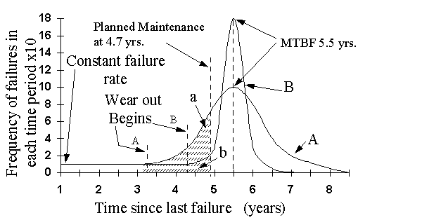
Section 3 Implementing Maintenance
Tasks [ go
to Main Index ] [ Table of Figures and
Diagrams ]
9. Maintenance Plan
9.1.
Introduction
9.2. On-Failure
Maintenance
9.3. Fixed Time
(Planned) Maintenance
9.4. Condition
Based Maintenance (CBM)
9.5. Design out
9.6. Opportunity
Maintenance
10. Potential Failures and the
P-F Curve
11. P-F Curves and inspection
interval timing
12. Condition based maintenance
(CBM)
12.1.
Introduction
12.2. Operating
Parameters
12.2.1.
Vibration
12.2.2. Temperature
12.2.3.
Lubricating Oil Analysis
12.2.4.
Acoustics
12.2.5.
The Human Senses
12.2.6.
Other Parameters
13. Vibration Analysis
13.1. Introduction
13.2. CBM Tours
13.3. Overall Vibration
13.4. Fast Fourier
Transform
13.5. Failure Modes
Figure 13 Maintenance Strategies [ Table of Figures ] [ Implementation Index ]
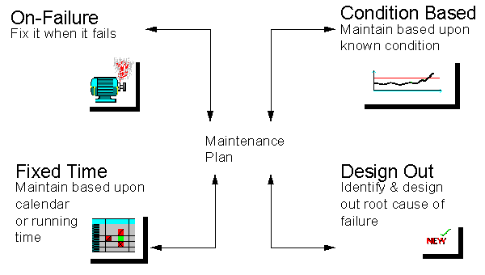
Once equipment has been purchased it must be maintained. The decisions made at the purchasing will have an input into the type of maintenance to be carried out. Maintenance actions can be divided into four general categories or strategies as shown in Figure 13. The maintenance plan for a company's assets will be a combination of these four strategies, often they could all be used on the same machine.
On failure maintenance can be effective if applied correctly. For example, non-critical low cost equipment, or where no other strategy is possible
Advantages
Low cost if correctly applied
Requires no advanced planning other than ensuring spares are available
Disadvantages
No warning of failure - safety risk
Uncontrolled plant outage - production losses
Requires large standby maintenance team
Secondary damage - longer repair time
Large spares stock requirement
Provision of standby plant
Planned maintenance is the most widely used form of maintenance. It is most effective if implemented as equipment begins to wearout and failure probability increases. Planned maintenance tasks are often grouped together into maintenance downtimes or windows to minimise the total number of planned maintenance stoppages per year. This strategy is seriously flawed because the majority of industrial failure modes are random in nature and so maintenance tasks based on time will have limited effected in improving equipment performance.
Advantages
Failures reduced
Labour used cost-effectively
Maintenance planned well in advance (provision for labour and material)
Disadvantages
Maintenance activity and costs increased
Unnecessary and invasive maintenance is carried out
Applicable only to age related deterioration
Maintenance sometimes induces failures (infant mortality)
CBM relies on the fact that the majority of failures do not occur instantaneously but develop over a period of time (P-F Curve). CBM involves recording some measurement that gives an indication of machine condition (temperature increase on an insulation surface, vibration increase on a bearing housing). Condition monitoring is not purely a 'high tech' tool to be used by highly skilled engineers. From the early days of steam trains "wheel tappers" used a hammer to strike a wheel to listen for the distinctive "ring" that said the wheel is healthy and without cracks. Operators who work with equipment every day can listen to equipment and identify changes in noise levels and vibrations. Temperature changes can be felt and these give warnings that something is 'not right'. An investigation can then be carried out to identify the exact problem.
Advantages
Maximises equipment availability
Some forms of inspection utilising human senses can be inexpensive
Allows shutdown before severe damage occurs
Production can be modified to extend unit life
Cause of failure can be analysed
Maintenance can be planned;
Labour can be organised
Spares can be assembled
Disadvantages
Vibration monitoring, Thermograph and Oil Debris Analysis require specialised equipment and training. A company must carefully choose the correct technique. A period of time will be required for trends to develop and then machine condition can be assessed.
This can prove to be a very effective method of solving a recurring problem. However it can easily be inappropriately utilised. Putting in a more powerful motor due to frequent tripping may be an ill-thought out reaction to malpractice by an operator, whilst simple instruction may solve the same problem. Before considering designing out a problem, it is important to identify exactly what the root cause of the problem is. Having identified the root cause; is it possible to monitor the condition at this problem area? If so, it may be cost effective to monitor the condition and take action as necessary. If this is not the case; can the problem be designed out? If it can; what will this involve and can it have any adverse effects elsewhere? Once the procedure has been thoroughly developed, proceed with the design out project. Finally if design out is been considered, is it a symptom that mistakes were made during the original designing of the equipment?
Advantages
Some minor design out projects can be inexpensive and guaranteed to work
A recurring problem can be completely resolved
Disadvantages
The root cause of the problem may get missed in the exercise
Larger design out projects can prove to be very expensive.
Production can be disrupted for a considerable period of time with larger projects
The expected result may not materialise
Unexpected problems may occur as a result of a major project
Solving a problem in one area may overload and cause problems in another.
This in not actually a maintenance strategy but a combination of fixed time (planned maintenance) and breakdown maintenance. It can be useful when a forced stoppage gives maintenance unexpected access to machinery to carry out inspections and/or maintenance. Inspections during routine down times can identify unexpected tasks that need to be carried out but time does not allow it to happen. These tasks can be recorded on a maintenance management system and scheduled into the first available down time.
With a growing awareness of the random nature of many failures, condition monitoring techniques are becoming more popular. Modern condition based maintenance practices like vibration analysis rely on the fact that many failures do not occur instantaneously, but actually develop over a period of time. If evidence can be found that this failure process is under way, it may be possible to take action to prevent failure and/or avoid the consequences. At the early stages of failure it is not possible to detect the signs of an impending failure. As the failure develops, there comes a point at which it can be measured. At this stage the failure has not yet reached a stage in which the equipment is unable to operate effectively. However the maintenance department has now the opportunity to correct the fault, before it becomes more serious. The point in the failing process at which it is possible to detect that the failure is occurring or is about to occur is known as a potential failure (potential because a serious failure has not yet occurred). Examples include:
The P-F curve (Figure 14) shows how a failure starts, deteriorates to the point at which it can be detected (the potential failure point "P"), if it is not detected and corrected, continues to deteriorate - usually at an accelerating rate - until it reaches the point of functional failure ('F') The P-F interval can be known as the "Lead Time To Failure."
Figure 14 the P-F Curve showing inspection intervals [ Table of Figures ] [ Implementation Index ]
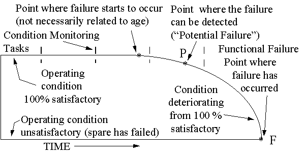
The "condition" being measured can take a variety of forms. Any condition that shows a change, as the health of the spare deteriorates, can be used. It must however, give enough of a warning between "P" and "F" to allow actions to take place otherwise nothing will be gained by having a warning. Equipment condition being measured could include:
Having identified point P then two actions can take place:
to prevent the functional failure. Depending on the nature of the failure mechanism, it is sometimes possible to intervene to repair the existing component before it fails completely.
to avoid the consequences of the failure. In most cases, detecting a potential failure does not actually prevent the spare from failing, but still makes it possible to avoid or reduce the consequences of the failure. For example the necessary spares, personnel and equipment could be made available, or the effected part could be changed out of production time before it actually fails.
The life of a component and the P-F curve are often confused. On-condition task frequencies are often based on the real or imagined "life" of the item. If it exists at all, this life is usually many times greater than the P-F interval, so the task achieves little or nothing. The component life is measured forward from the moment it enters service. On the other hand the P-F interval is measured back from the functional failure to some point that a warning of the forthcoming function failure can be detected (potential failure). The two concepts are often unrelated.
Figure 15 P-F curve and inspection interval timing [ Table of Figures ] [ Implementation Index ]
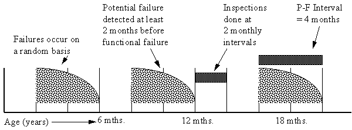
In the above example (Figure 15), the batch of components has a random failure pattern with two failures in the first year. Let us assume that over a large batch these components have an average life of 3 years. From condition monitoring it has been observed that these components have a P-F interval of about 4 months. Because they started to fail in the first year of service the condition monitoring tasks must commence immediately after installation on a 2 monthly basis. The timing of the inspections has nothing to do with the age or life of the component.
P-F curves can have considerable variation in length from minutes to months. A P-F curve of 4 months is desired because:
Earlier it was shown that due to the randomness of many failure modes, planned maintenance (based on time elapsed, machine running time, machine cycles, etc.) will have limited effected on improving the performance machinery. Often it can actually make it worse. In many situations it can prove cost effective to measure the condition of the equipment and plan maintenance as required. This is known as condition based maintenance (CBM).
How best to monitor machine or bearing condition requires one to know which measurements to take and where and how to take them. Commonly measured operating parameters include:
In rolling element bearings, vibration results from the impact generated by a ball rolling over a defect. Methods such as Shock Pulse and Spike Energy are used to detect bearing damage. Vibration measurements taken and trended over time can be a good indication of bearing damage. Vibration is the best operating parameter to judge rotating machinery conditions such as balance, alignment, bearing stability, and stress applied to components. Measuring the overall vibration of a machine; a rotor in relation to a machine; or the structure of a machine, and comparing the measurement to its normal value (baseline reading) and alarm setpoints, indicates the current health of the machine.
Temperature measurement (Thermograph) is a useful indicator of electrical or mechanical condition such as the load applied to a thrust bearing. As a bearing fails, friction causes its temperature to rise. The use of infrared cameras or installing thermocouple sensors in the housing of a bearing and measuring temperature changes within the bearing or lubricant allows problems to be recognised early (potential failure).
Monitoring oil condition warns of an increase in foreign substances, such as water, (>2.5%) which can degrade the lubricating properties of the oil and cause bearing failures. It also detects the presence of metallic particles carried into the oil stream. These metallic particles are analysed to determine which part of the machine is wearing and how fast. Particle Counting and Ferrograph are two analysis techniques.
Very high frequency, acoustically transmitted vibration is measured with a high frequency piezoelectric sensor. This sensor is excited by compression waves produced by metal-to-metal contact and by metal as it mechanically fails. The acoustic flow detection signal is conditioned to produce outputs which can be measured as numerical values on a meter. These measurements are used to judge the overall condition of a bearing and evaluate local defects. This technique is highly effective in very early detection of bearing failure.
The simplest condition monitoring techniques are the four human senses (look, listen, feel, and smell)
Machinery faults such as:
They are not as accurate as the more scientific methods but still have considerable advantages:
Many of these monitoring tasks are ideal for operators due to their close proximity to equipment. Skilled maintenance engineers may not be always available to carry out these tasks and would prefer to be doing more highly skilled jobs.
Information available in a machine's control system such as pressure, flow, and speed, or from machinery gauges can be incorporated into a condition monitoring program for assessment and historical trending.
Technique Measurement Point Instrumentation Skill Required Comments
Thermal
Contact Surface or Thermocouples, Little skill Label &
internally mounted crayons, labels required cray-ons
must be in contact etc. cheap
with hot surface alternative
to non
contact
Non Surface temperature Infra red cameras, Experience Easy to use,
contact measurements made Pyrometers needed to accurate
locate hot equipment
spots
Vibration
Overall/ Any moving component Vibration Skill required Wide range of
spectra typically rotating analysers/data for diagnosis equipment
machinery e.g. collectors, hand and measurement usually
bearing housing. held overall meters linked to
Transducer placed in software for
path of vibration analysis and
transmission trending
Bearing Bearing housings, as Detection meters Skill required Range of
Damage close to source of Shock pulse, Spike to position meters choice
vibration as energy, enveloped measuring depending on
possible signal etc. points operation
Performance
Flow Fluid flow through a Thermometric Skill required Application
pump venturi principle, to position determines
turbine element probes technique
type
Pressure Fluid in system Gauge, No skill Pressure
time/pressure required tappings,
required
Current Current required to Simple analysis Skill required Techniques
drive electric motor system, time domain in diagnosis useful
of spectrum transmission
analysis systems
Lubrication
Condition Any lubrication Portable lab kit or Some skill to Collection of
between wearing analytical lab apply relevant relevant
surfaces techniques tests
Wear Wear debris in Spectrographic Diagnostic Range of
Debris lubricant used analysis, On-line skill required techniques to
between wear systems, to distinguish suite size of
surfaces via Ferrography abnormal from wear
magnetic plugs, on normal wear particles to
line systems, oil be counted
sample
Different machinery problems cause different types of vibration. For example, a bent shaft causes a machine to vibrate differently to a worn bearing. Generally, these differences are indistinguishable to the touch or ear. However, with sensors and micro-processors, some condition monitoring equipment coverts' vibration data into various plotted formats that are recorded and analysed to help diagnose machinery problems. Vibration analysis is the analysis of these plotted vibration signals to diagnose the cause(s) of abnormal vibration. Popular vibration analysis formats include overall vibration trend plots, time waveforms, spectra analysis and Fast Fourier Transform (FFT).
Condition Based Maintenance utilising vibration analysis involves setting up "tours" (a list of condition based maintenance tasks to be carried out). One particular tour may take place every two months. The measurements taken on this tour can be recorded using a data collector and trended in a maintenance management package with automatic alarm signals if increases in vibration signatures are recorded. The vibration measurement at each measurement point will vary dependent on the type of failure mode being trended.
Overall vibration measures the total energy associated with all vibration frequencies coming from a given measurement point. Overall vibration values are compared to past vibration measurements taken when the machine was in good running order.
Because different types of problems often occur at different frequencies it is very useful to analyse measured vibration signals with respect to frequency. The Fast Fourier Transform (FFT) can mathematically breakdown the overall vibration signal and arrange it according to frequency. The amount of vibration occurring at any particular frequency is called the amplitude of vibration at that frequency. FFT analysis can be very useful when analysing the causes of vibration. Vibration associated with say a bent shaft or impeller problem will occur with the frequency of rotation of the shaft. Problems associated with the roller bearings will occur at higher frequencies that are a function of the number of rollers in a bearing.
A selection of common detectable failure modes are:
Imbalance: a peak at shaft speed.
Misalignment: typically 1x, 2x & 3x shaft speed
Looseness: often at 1x or 2x shaft speed
Bearing Damage: higher frequency peaks typically between 2 KHz and 5 KHz depending on shaft speed and transducer resonance.
Electrical Problems: synchronous frequency and side bands.
Gear Damage: gear mesh frequency depending on shaft speed and number of teeth and side bands.
Oil Whirl: approximately half shaft speed.
Blade Damage: number of blades by shaft speed.
Cracked Shaft: typically 2x, 3x shaft speed.
Figure 17 Application of Condition Based Monitoring Techniques [ Table of Figures ] [ Implementation Index ]
Equipment Causes of Failure Techniques Comments
Fans Out of balance, Misalignment Overall acceleration, Spike Simple application using windowed spectra Bearing Damage, Aerodynamic energy measurement, Overall to trend deterioration in specific faults. forces, Belt problems Vibration, Vibration analysis, Equipment performance is monitored by Flow measurement measuring process parameters.
Filters Filter Blockage Pressure Measurement Allows change of filter by condition
Pumps Misalignment, Bearing damage, Overall vibration, Vibration Windowed spectra to trend deterioration in Cavitation, Impeller damage, analysis, Overall acceleration, specific failure modes. Cavitation can be Hydraulic forces Spike energy measurement, Flow detected using frequency analysis. Often & Motor current measurement blade pass frequency indicated hydraulic problems
Turbo Out of balance, Misalignment, Proximity probe analysis, Turbomachinery is supercritical and machinery Flexing in shaft, Oil whirl, Temperature measurement, therefore requires multiplane balancing. Compressors/t Rubbing, Looseness, Aerodynamic Pressure measurement, Flow Process parameters provide a good urbines forcing. measurement, Rundown tests indication of performance. Drops in process efficiency correlate with deteriorating mechanical condition
Reciprocating Out of balance, Misalignment, Vibration analysis, Overall Must be tested at same load and speed. Machinery Gearing faults, Looseness, Dynamic vibration, Performance Accurate diagnosis can be made when the Compressors, unbalance, Ancillary component measurement, Compression fundamental of each rotating component is engines faults checks, PV diagrams known
Transfer Bearing damage, Worn guides, Motor Overall vibration, Vibration Drive problems can be detected using equipment failure, Gearbox failure analysis, Spike energy, Cycle vibration analysis time measurement, Gearbox oil analysis
Resistance Worn electrodes, Insufficient Current measurement, Pressure These measurements are used as a condition welding pressure, Current setting, setting, Circuit resistance check and do not require permanent machines Pneumatic cylinder leaks, records. Deterioration of jumper cables
Hydraulic Motor breakdown, Pump failure, Pressure measurement, Flow & Changes in flow rate and pressure signal powerpacks Valve problems temperature measurement, changes in piston rings, rotor or gear Vibration analysis, Spike condition. Energy.
Section 4 Optimum Maintenance
Tasks [ go
to Main Index ] [ Table of Figures and
Diagrams ]
14. Plant Register (Asset
Hierarchy)
14.1. Introduction
14.2. Hierarchy
15. Failure Modes Effects &
(Criticality) Analysis (FME(C)A)
15.1. Introduction
15.2. Benefits
15.3. Maintenance
Review
16. Fault Tree Analysis (FTA)
17. Cause and Effect Diagrams
(Fish Bone or Ishikawa Diagrams)
18. Reliability Centred
Maintenance
18.1. Introduction
18.2. Seven Basic
Questions
18.3. Implementing RCM
19. Review of Equipment
Maintenance
19.1. Introduction
19.2. Reliability and
Criticality Analysis
19.3. Maintenance Review
19.4. Maintenance Tasks
20. Why-Why Analysis
20.1. Introduction
20.2. Maintenance &
Production Records
20.3. Example of Why
Why
Most organisations use, hundreds, if not thousands of physical assets. The assets range in size from small pumps to steel rolling mills. They may be concentrated on one small site, or spread over thousands of square kilometres. The number and variety of items means that it is necessary to draw up a comprehensive list of these assets for maintenance purposes, spares purchasing, or accounting exercises. In maintaining equipment it must be possibly to identify individual spares and the effect of their failure on the total plant This list is known as the plant register The plant register is a listing of the plant, equipment and buildings owned or used by the organisation, which can require maintenance of any sort. In establishing a plant register a structured (or hierarchical) approach to asset definition is required.
Five terms must be defined
Spares (& Measurement Points), Item, Unit, Area & Plant
Spare: This is the lowest inventory level and is where the spare parts are found. Examples include, seals and bearings. All maintenance actions are carried out at the spare level. When a gearbox fails it will be gears, bearings, seals or shafts that will fail. Vibration analysis assesses the condition of individual bearings. In recording maintenance tasks, they must be attributed to a spare. This enables historical analysis to be carried out in an FMEA and problem areas on machines can be identified from their Mean Time Between Failure (MTBF) and Mean Time To Repair (MTTR).
Mpoint & Parameter In many cases, an FMEA will lead to routing condition monitoring tasks. These tasks can vary from a machine operator checking the fluid level in a site glass to specialist contractors carrying out crack detection tests on turbines. Regardless of what type of inspection is being carried out, some parameter is being measured. For this parameter a pass and fail standard must exist for comparison purposes. For some parameters such as vibration the positioning of the test probe is critical for continuity of measurement. In these cases a measurement point (Mpoint) will be specified.
Item: An item is a collection of spare parts, For example a gearbox may consist of shafts, bearings and seals. Often items can be replaced - a gearbox or motor can be exchanged for another item to carry out the same task.
Unit: A number of items may be grouped together to perform a specific function. A motor, gearbox, belt & rollers, together with a frame will build up to form a belt conveyor.
Area: A number of units such as conveyors, weighing machines and packaging machines will build up to form an area of plant that performs a specific function, i.e. packing area.
Plant: A number of areas will make up an entire plant e.g. ingredient mixing area, ovens, cooling area, and packaging area. Often a plant will be a single cost centre.
Creating an asset hierarchy is a time consuming and complex task. This can be highlighted by the case of a water pump.
A main water pump in a hydro-electric station would be an area on its own because three levels would be required below the pump level to describe all of the valves and hydraulic control gear needed to control the water flow.
In industry most motor/pumping units with associated valves and switch gear would be considered as a unit. The motor and pump would be considered as items.
A motor/pump unit in a central heating system would not be serviced. In the hierarchy it could be treated as a spare.
Creating classifications may not be a simple task. In industry the hierarchy may be based on stages of the process. In building services the classification may be based on location. Problems can arise when both may be applicable but they conflict.
FMEA & FMECA (Ref. ) are engineering analysis that, if performed properly, can be of great value in assisting the decision making process of the engineer during the design stage or maintenance review to analysis possible and existing modes of failures of a piece of equipment. The analysis is often called a 'bottom up' analysis as it examines equipment at the spare level, and considers the system failures that result from their different failure modes. In an FMECA analysis a relative criticality is calculated for each failure mode.
A good FME(C)A will present in tabular form for each failure mode of all the components:
The report may also include further information, such as recommendations for:
manufacture and assembly (inspection, test, quality of components etc.);
maintenance (inspection, test, replacement periods etc.);
detectability (user, maintainer, etc.).
A maintenance review can be carried out using an FMECA approach to identify potential failure modes. This is done by gathering the maintenance records of the plant. Accurately recorded data obviously aids the production of an optimised maintenance plan. It is here that the benefit of associating all maintenance tasks to a particular spare becomes crucial to an accurate review. The findings from the FMECA are then tabulated in the form of a work sheet. A FMECA worksheet with typical columns is shown in Figure 18.
Figure 18 FMECA [ Table of Figures ] [ Maintenance Optimisation Index ]
FMECA Worksheet
PLANT AREA Unit
Plant No. 10 Packaging Carton Former
ITEM SPARE Mode of Warning Effect Root Cause CR. Task Pe R M
failure r
135 Glue system Electrical Connections Hard glue build up around Glue spills 9.8 Consider T DO
wiring get damaged elect. connect. onto rerouting hoses
by operators connections. & electrics
during Hot air gun
cleaning & knife used
to clean
136 Magazine Carton Varying Drops cartons - varying Incorrect 9 Train ops. in O T
gate carton pressure on gate setting of the setting up
performance gate sensor of sensor
137 Magazine Carton Carton Cartons pushed back or Ops change 8.6 Train ops. in O T
gate sensor dropped sensor to the setting up
incorrectly improve of sensor
set performance
138 Glue system Glue hoses Carbonised Hard glue breaks & Glue 7.2 PM system 1M T PM
glue builds contaminates nozzle carbonises flushing
up inside on walls
hoses over time
139 Infeed Infeed Miss-counting Short counts in pockets Various - 6.5 Tasks on flow
conveyor conveyor by collator see collator wrapper and
collator
140 Magazine Carton Excess Drops cartons Carton gate 6.4 Check and 1W O PM
gate carton gate sensor adjust carton
pressure operating gate sensor
incorrectly
141 Magazine Carton Vacuum Drops cartons Debris 5 Clean filters 1M T PM
gate filters/lines contamination and hoses
blocked
142 Glue system Electrical Hard glue Visual - glue drops off Excess 4.8 Consider T DO
build up underside of flap glue/glue rerouting
around incorrectly cables
electrical applied
connections
143 Conveyors Conveyors Carton gate Cartons drop Card debris 4 Clear cardboard 1W O PM
drops fouls from conveyors
cartons conveyors & and clutches
clutches
144 Glue system Glue Excess glue Glue over flow when flaps are Glue 3.2 Remove ability -- T DO
nozzle applied closed pressure too of operator to --
high adjust glue --
pressure
145 Magazine Carton Worn vacuum Drops cartons Normal wear 3.0 Inspect cups 1M T PM
gate cups and replace as
required
KEY Per = R=Responsible M = Maintenance
Periodicity Person Type
CR - OG = On 1M=Once per month T = technician C = Clean
criticality Going
1S = Once 1Y = Once per year O = operator T = Training
per shift
2D = Once N/A = not PM = planned
per 2 days applicable maintenance
1W = Once per CM=condition
week monitor
DO = Design Out
OF = On Failure
[ go to Top of Page ] [ Maintenance Optimisation Index ]
Fault Tree Analysis can be a very detailed process and is used in the analysis of complex systems. It complements FMECA in that it is a "top-down" analysis, starting with a system fault (the top event) and analysing this fault in terms of sub-system faults. For example in the nuclear industry the top event could be a leak of radio-active water from a heat exchanger. The heat exchanger is then analysed to identify every possible way it could leak such as a leaking flange or cracked pipe. Each sub event is then analysed to identify how each one could occur, such as incorrect flange packing fitted, incorrect flange pressure, excessive water pressure, etc. One of the next levels would then be to identify all possible reasons for a pressure build up inside the heat exchanger pipes. The process is complete when every possible root cause of a water leak form the heat exchanger has been identified. Each event can have a probability associated to it. The same techniques as used in the chapter on Reliability Block Diagrams can then be used to estimate the probability of a radio-active leak form the heat exchanger.
Example
In Figure 19 the top event is no liquid display on a calculator. This can be caused either because the LCD has failed, or because there is no power reaching the display. The latter fault is analysed further, and may be caused by the faults shown, either switch failed at off, or internal wiring failure, or no power to the calculator.
In this example the secondary basic events of:
Multiple failure of LCD's
Battery uncharged
No battery
will not be investigated because it does not really matter why the battery is uncharged or why the battery is missing.
The secondary basic events of:
Internal wiring or joint failure in the calculator
Wiring or joint failure in transformer could be investigated if desired. However it may be easier to replace the transformer or calculator than try to fix them.
Fault trees utilise many different symbols, some similar to digital electronics e.g. AND gates (in which all of the inputs must occur together for the event to operate) & OR Gates (in which only one of the events must occur for the event to operate).
Figure 19 Fault Tree for Calculator Display [ Table of Figures ] [ Maintenance Optimisation Index ]
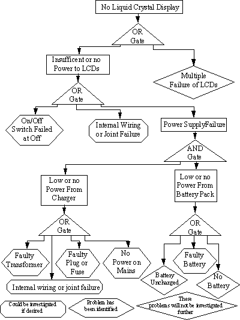
[ go to Top of Page ] [ Maintenance Optimisation Index ]
Fish bone diagrams are another graphical method of listing causes of an event. "The Top Event" is shown at the end of a horizontal line on the right of the diagram. The major categories of possible causes are arranged as branches slanting off above and below this line. Typical causes of the top event include the four "M's" - man, methods, materials, and machines. Specific possible causes become the detailed twigs as shown in Figure 19.
Maintenance Practices & Procedures
Poor workmanship (man) can result in some of the errors such as misalignment. Errors such as impeller balance may result from material (materials) build up on the impeller.
Equipment Design
The basic design of the machine (machine) may be deficient such as a seal design will not protect the lubricating oil from water contamination.
Operating Practices
The system design may cause errors such as cavation. Inappropriate operating procedures (methods) such as frequent stop starts may result in early machine failure.
The fish bone diagram helps to focus one's mind on the possible causes of equipment failure. Maintenance should look to cure the cause and not the symptoms of the problem. For this reason causes should be pushed as far back as possible. Each possible cause must then be analysed using techniques such as FMECA to analyse the exact cause of failure.
Figure 20 Fish Bone Diagram [ Table of Figures ] [ Maintenance Optimisation Index ]
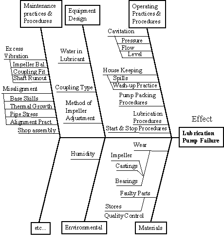
RCM grew from studies carried out during the development of the Boeing 747 (Ref. ). This work showed that the failure modes of aircraft components are random dominated. At this time aircraft maintenance was based predominately on flying hours, therefore, a new method of maintaining aircraft was considered appropriate. The RCM approach assumes no prior knowledge of the components, a so-called zero-based or first principles approach. Each component in the aircraft was systematically analysed to identify their failure modes and appropriate maintenance tasks were then assigned. This analysis is carried out by asking seven questions about each asset.
1 What are the functions and associated performance standards of the asset in its present operating context?
Functions are categorised as follows:
On Line Functions that are in use continuously or at such frequency that personnel will be continuously aware of their state.
Standby Functions that are under the supervision of operations personnel but are used so infrequently that a special check is required to identify (hidden) failures that have occurred.
2 In what ways does it fail to fulfil its functions (failure mode)?
The failure modes to be considered are:
3 What causes each failure?
Each potential failure must be investigated to identify every possible cause. Maintenance actions are then put in place to tackle the causes and not the symptoms of a failure. This stage of RCM must be controlled as time can be wasted investigating unlikely causes of failure.
4 What happens when each functional failure occurs?
It is necessary to understand the consequences of each functional failure to determine if any preventative maintenance is actually required.
5 In what way does each failure matter?
Once the failure consequences have been identified, they are categorised, which will aid in the determination of an appropriate maintenance task.
6 What can be done to prevent each failure
The characteristics of the individual failure mode will determine which one of the four maintenance strategies will be chosen
7 What should be done if a suitable preventative task cannot be found. (default tasks)
An obvious maintenance task may not exist for some failure modes. RCM provides a detailed decision tree to ensure the correct type of maintenance task is selected for each failure mode.
RCM can be implemented through the setting up of cross-section review groups who will work through the above 'seven questions' to develop the maintenance requirements for specified assets. The zero-based approach necessitates a high degree of understanding of the asset being analysed. If the necessary skills do not exist within the company external specialists may be invited to join the group to discuss specific problem areas. Each review group will be chaired by a facilitator who will control the flow of information, ensuring it is recorded on specific RCM worksheets. The group will work together to answer the first four of the 'seven questions'. The RCM Information Worksheets are used to record the answers to these questions:
The next stage of RCM considers the final three of the 'seven questions' to evaluate the consequences of the failures and based on the consequences, identify appropriated maintenance tasks. The RCM Decision Tree is used in this task. The output from the groups will be RCM Decision Worksheets detailing:
It is then the responsibility of maintenance and production management to introduce these revised tasks to the factory floor employees.
[ go to Top of Page ] [ Maintenance Optimisation Index ]
Figure 21 Review of Equipment Maintenance [ Table of Figures ] [ Maintenance Optimisation Index ]
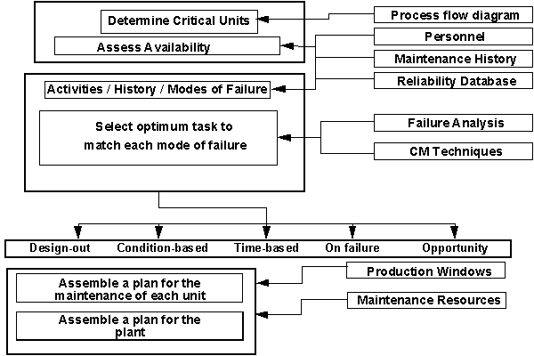
The introduction of a comprehensive preventive maintenance program based on a thorough review of the operation and maintenance of the plant is essential to achieve competitive production. An effective method of carrying out a maintenance review is to use as a base line the experience of the plant that has been built into the existing maintenance program and maintenance history rather than the 'zero-based' approach of Reliability Centred Maintenance (RCM). To carry out an effective review, it must be carried out in two stages:
A structured analysis of plant criticality (in terms of downtime, safety, quality etc.) is performed through the use of Reliability Block Diagram modelling of the process derived from process flow diagrams This results in a prioritised list of equipment for targeting in the next stage.
The optimum maintenance tasks for the targeted equipment are derived through a failure mode orientated (FMECA) review of existing maintenance programs and history. The FMECA can be carried out by reviewing the plant maintenance history and speaking to plant production and maintenance personnel using techniques such as Why-Why analysis (5 Whys).
This process will lead to specified maintenance tasks for each failure mode identified. The selected maintenance strategies for the individual modes of failure will in general comprise, Design-out, Condition Monitoring, Fixed Time (planned) Maintenance, and Opportunity Maintenance. Some items may also be allowed to run to failure. In assembling the plan for the plant, maintenance resources and production windows will have a major influence on the maintenance program for the whole plant. The process of assembling the plan will inevitably involve change in strategies and interactive approach to obtain the optimum balance between ideal maintenance strategy, production constraints and maintenance resources. Figure 21 graphically represents the procedure for carrying out a review of equipment maintenance (REM).
Many companies will contain information about historical plant performance in a variety of sources such as maintenance records and production records. This information can be useful in identifying the significant failure modes within the plant which can then be targeted by revised maintenance tasks. The targeting of these failure modes will realise the maximum improvement in plant performance for the least expenditure. However in many companies the paper based or computerised records will not contain the required detail to enable the significant failure modes to be identified. MMSs and daily production records may also record the same problem but it may be difficult to collate them together for various reasons.
For these reasons it is vitally important to analyse fully the available maintenance records. By asking why, four or five times the interviewee may be moved from using the warning effect as the mode of failure to describing the mode of failure itself.
In the following example, fourteen biscuits are collated by the counting machine and then presented to the flow wrapper to be wrapped. The pack collator then arranges three packs of fourteen biscuits together to be passed to the cartoning machine which puts the three packs into a carton.
Why was the carton forming machine rejecting so many packs of cakes due to short pack counts in multipacks?
Poor performance by the collator results in it being unable to count and collate the required number of packs to be fed into the cartoner.
Why was the smart feeder unable to collate the packs correctly?
The collator has difficulty in counting packs due to pack length variation. Broken biscuits along with poor quality seals results in contamination of the drive conveyors.
Why are the packs varying in length, and why are the seals of poor quality?
Poorly arranged packs of biscuits by the counting machine are been being crushed by the cross seals of the flow wrapper resulting in contaminated jaws and poor seals. Operators adjust the pack length to stop this happening.
Why are the packs of biscuits poorly arranged?
The cakes are held loosely because there are short cake counts in the packs.
Why is there short cake counts in the packs?
Because of various problems in the counting machine, cakes are being dropped.
In order to stop the carton former rejecting packs of cakes due to short pack counts in multipacks, it is necessary to concentrate the maintenance actions on a machine upstream of the cartoning machine. A review of the performance of the counting machine recommended a range of actions to improve its performance.
Section 5 Measure Maintenance
Performance [ go
to Main Index ] [ Table of Figures and
Diagrams ]
21. Maintenance Management
System (MMS)
21.1. Introduction
21.2. Asset Manager
21.3. CBM Manager
21.4. Spares Manager
21.5. Work Control
Manager
21.6. Report Manager
22. Overall Equipment Effectiveness
(OEE)
22.1. Introduction
22.2. Six big losses
22.3. Availability
22.4. Performance
Efficiency
22.5. Yield
23. Pareto Analysis
Maintaining equipment involves the collection of large amounts of information to record historical equipment performance, identify spares, etc. Historically this information has been held in paper based records. Large amounts of paper based records can become difficult and expensive to store and analyse, errors and omissions can then easily take place. The development of the Personnel Computer has been followed by an increasing choice of computerised Maintenance Management Systems (MMS) which replaced the paper based records. MMS should perform functions such as:
This example gives assess to the plant inventory . This is a multi-level hierarchical filing system using seven levels:
P Plant - Major system
A Area - Sub division of a plant
U Unit - Individual functional items of equipment
I Item - Sub assembly - highest sub division for in-situ repair or replacement
S Spare - Component that would be replaced on failure
The next two levels are used specifically in the condition based maintenance function (CBM Manager)
M Measurement Point - where is the measurement to be taken?
F Fault Parameter - with details of the measurement to be made to detect the fault
The CBM Manager is used to generate routine inspections. This module includes the functionally required to organise, take measurements and review trends and vibration spectra associated with condition based maintenance. These cbm tasks such as vibration analysis can be taken paperless using hand held data collectors.
The Spares Manager provides a stores and purchasing management system integrated with both the Asset Manager and Work Control systems.
This module is used to generate and record details of planned maintenance tasks. The Work Control Manager specifies the following information to be recorded against each maintenance task Figure 22).
Asset identification using the asset hierarchy
Asset Type, e.g. boiler, pump, motor.
Fault codes: The asset type will have a number of Fault Codes associated with it - e.g. excess vibration, will not start, monthly PM check.
Asset code will be based on the asset hierarchy.
Expense codes can be used to define the type of cost being allocated to a job - e.g. mechanical labour, mechanical spares.
Job types define job categories, e.g. breakdown, preventative maintenance.
Priority codes are used to assist with prioritisation of work - e.g. IMMEDIATE must be done within one hour.
Skill level of the person to carry out task - e.g. fitter, electrician, operator
Figure 22 Job Details Page from a Work Control Module [ Table of Figures ]
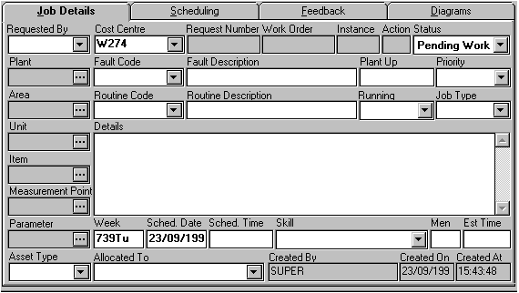
This module can be used to produce maintenance performance reports of the users choice.
The section on reliability has discussed estimating and measuring equipment reliability to perform its intended function without failure. Often companies are very good at recording the level of equipment breakdown. However this is only one of five reasons why equipment is not performing up to the expected standards; availability is effected by down time; capacity lost is effected by speed losses; and yield is effected by defect losses. In order to get the maximum performance or OEE from equipment the "six big losses" must be eliminated:
Down Time:
Equipment failure - from breakdowns
Set-up and adjustment - changeovers
Speed Losses:
Idling and minor stoppages - due to the abnormal operation of sensors, blockages, contamination, etc.
Reduced speed - due to discrepancies between the design and actual speed of equipment (capacity derating over time).
Defect:
Process defects - due to scraps and quality defects to be repaired
Reduced yield - from machine start-up to stable production (following a batch change over or a shutdown).
It is necessary to define some terms.
Planned downtime, is the amount of time officially scheduled in the production plan, which includes, no orders, changeovers and planned maintenance.
Loading Time, or the available time is derived by subtracting the planned downtime from the available time per day or week, etc.
Availability = Operating time
Loading time
= Loading Time -Down Time
Loading Time
Performance efficiency is the product of the operating speed rate and the net operating rate. The operating speed rate refers to the discrepancy between the ideal speed (based on equipment capacity as designed) and its actual speed.
Operating speed rate = Theoretical Cycle Time.
Actual Cycle Time.
Equipment may be deliberately run at a slower speed due to, faulty equipment, quality problems etc.
The net operating rate measures the maintenance of a given speed over a given period. This calculates losses resulting from minor recorded stoppages, as well as those that go unrecorded on the daily log sheets.
Operating Time
Net operating time = Actual Processing Time
Operating Time
= Processed Amount X Actual Cycle Time
Operating Time
Performance Efficiency = Net Operating Time X Operating Speed Rate
= Processed Amount X Actual Cycle Time. X Theoretical Cycle Time.
Operating Time Actual Cycle Time.
= Processed Amount X Theoretical Cycle Time.
Operating Time.
Yield = Process Amount - Defect Amount).
Processed Amount
OEE = Availability X Performance Efficiency X Yield
Figure 23 gives an example calculation of OEE.
Figure 23 Example Calculation of OEE [ Table of Figures ] [ Maintenance Performance Index ]
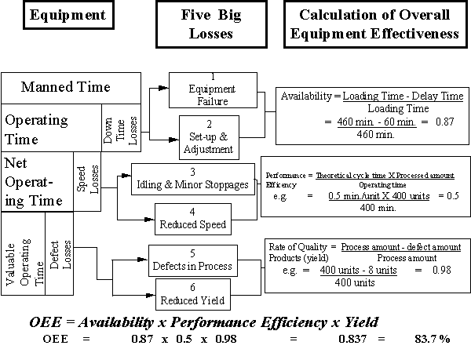
For maintenance management purposes it may be desirable to graphically represent historical maintenance data. This type of data can be represented on histograms, pie-charts, etc. Another way of presenting data is to carry out a Pareto Analysis. This tool can be applied to a wide range of maintenance control problems, for example, to highlight the relative importance of particular key plant registers to the total maintenance effort on a line. The following histogram shows the maintenance man-hours recorded against units numbers 1 to 30 in a 12 month period.
Figure 24 Man-Man Hours recorded against each unit number [ Table of Figures ]
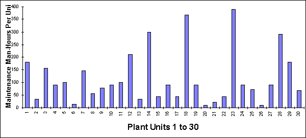
Figure 25 Pareto Analysis of Maintenance Man-Hours recorded by unit [ Table of Figures ]
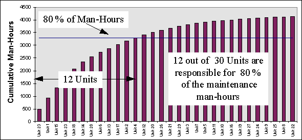
The Pareto analysis shows that unit numbers 23, 1, 15, 23, 18, 14, 28, 6, 13, 17, 2 & 4 have incurred the majority of the maintenance man-hours. The maximum benefit would be gained if these 12 units were targeted to reduce their maintenance requirement.
[ Maintenance Performance Index ]